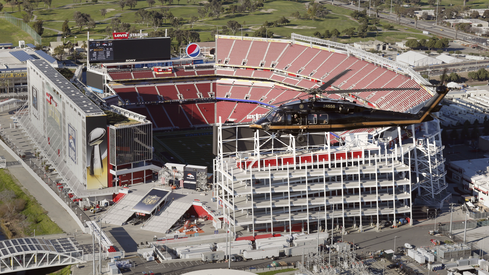
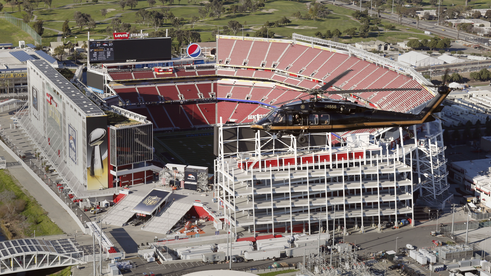
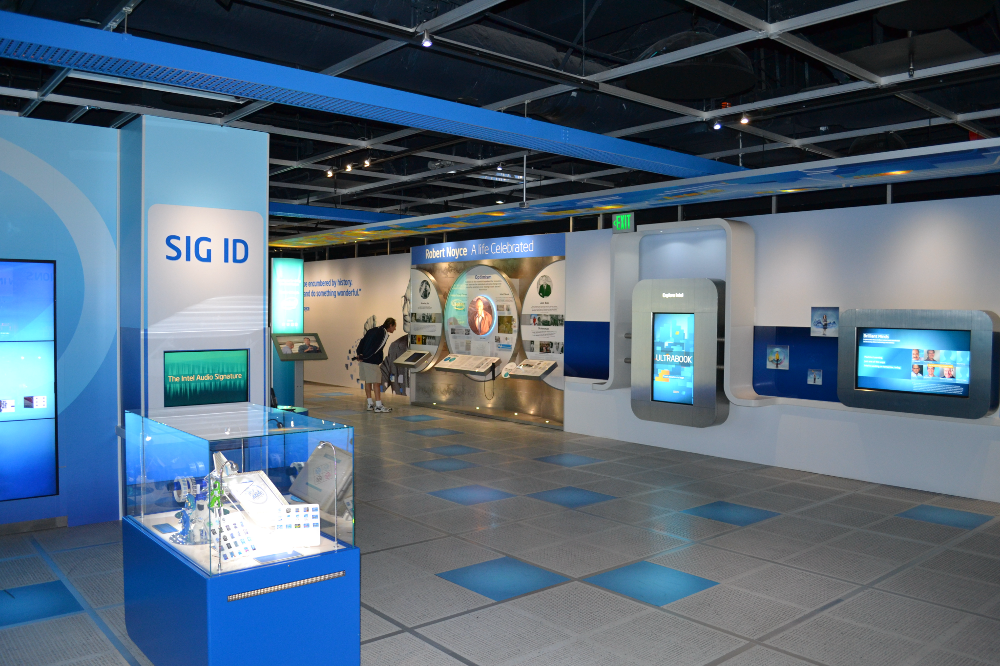
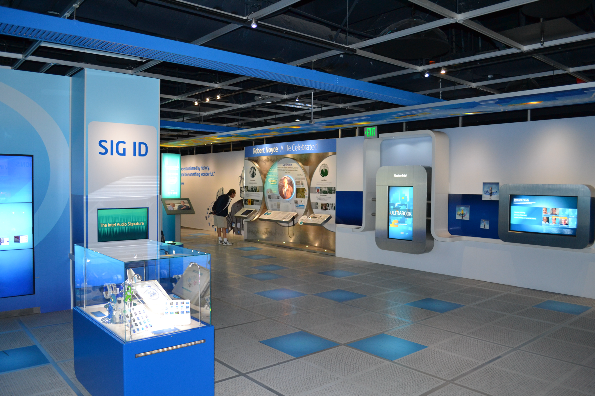

La culture à Santa Clara, en Californie,
est à la fois diversifiée et dynamique.
La ville abrite une population d'origines ethniques et raciales variées,
ce qui se reflète dans son offre culturelle.
La culture traditionnelle de Santa Clara est fortement influencée par ses racines espagnoles.
La ville abrite la Mission Santa Clara de Asís, une mission franciscaine fondée en 1777.
La mission est un important site historique et culturel,
et elle accueille des événements et des programmes culturels tout au long de l'année.
La culture moderne de Santa Clara est dominée par l'industrie de la technologie.
Cette diversité se reflète dans la scène artistique et culturelle de la ville.
Santa Clara offre une variété de possibilités culturelles pour ses habitants et ses visiteurs.
La ville abrite des théâtres, des musées, des galeries d'art, des salles de concert,
des bibliothèques et des centres culturels.
À Santa Clara, le tourisme est un secteur important, voici quelques faits :


 

 
